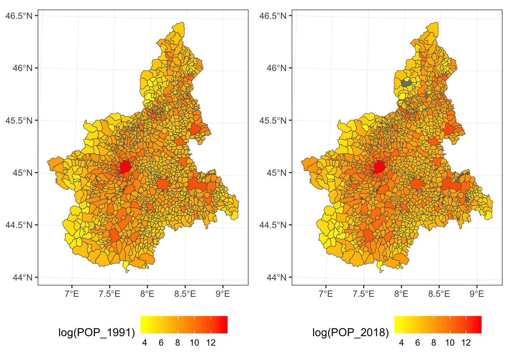
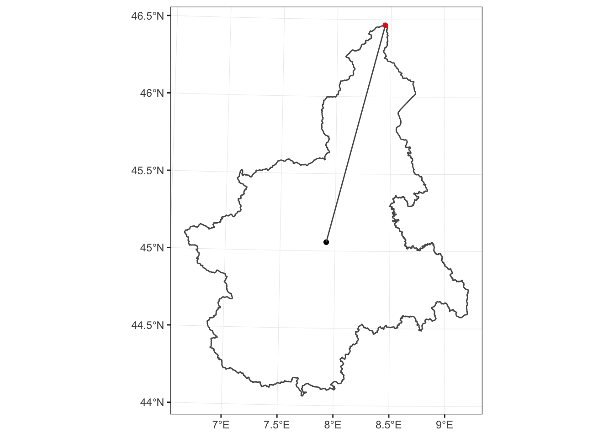
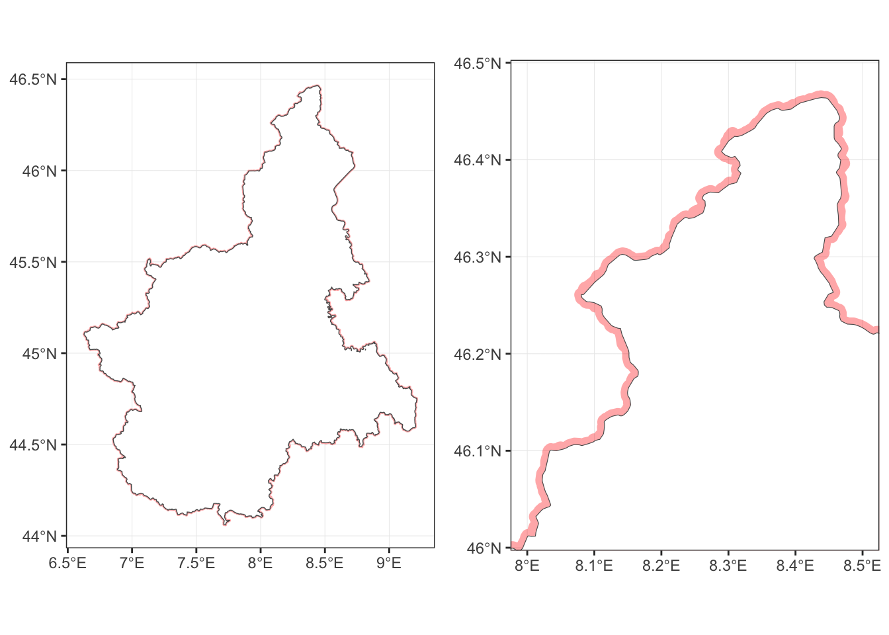
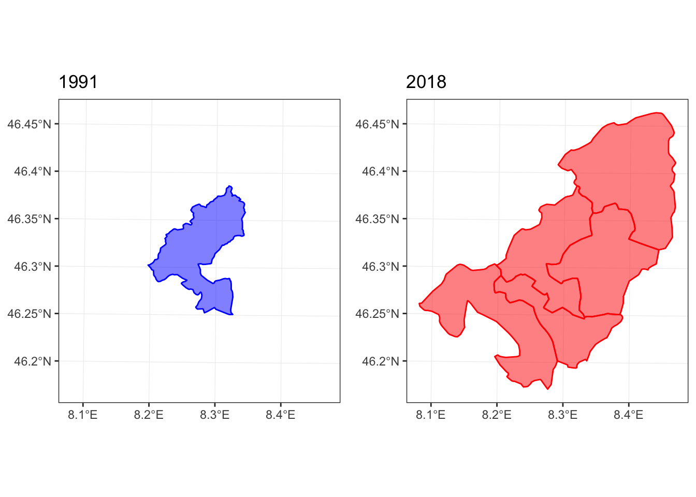
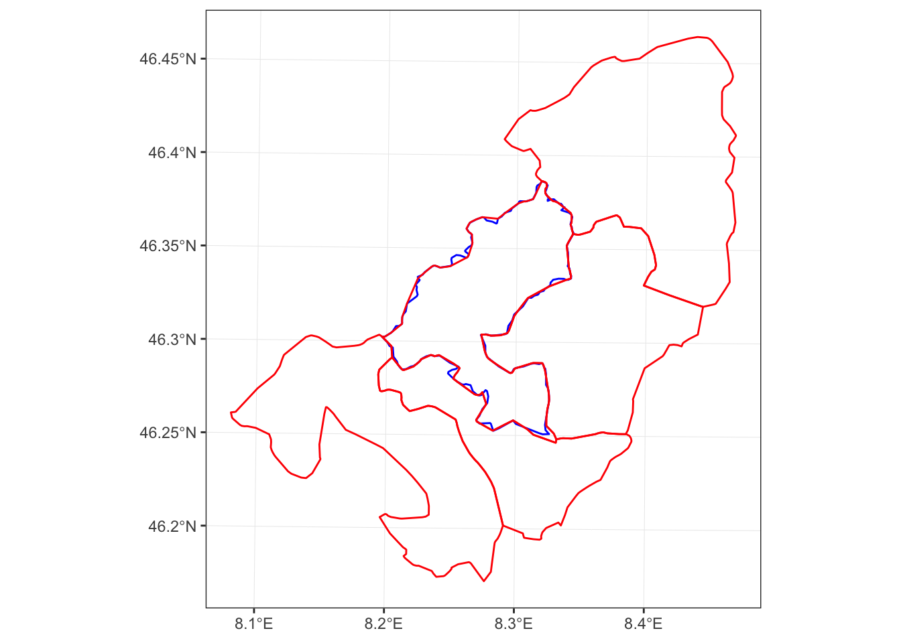
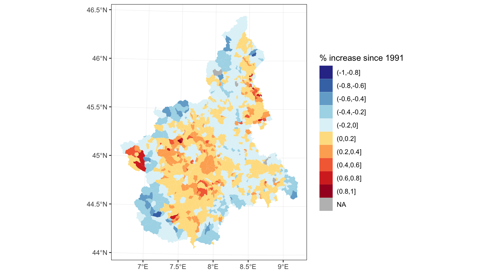

recogeo: A new R package to reconcile changing geographies boundaries (and corresponding variables)
Francesco Bailo
Demographics information is usually reported in relation to precise boundaries: administrative, electoral, statistical, etc. Comparing demographics information reported at different point in time is often problematic because boundaries keep changing. The recogeo package faciliates reconciling boundaries and their data by a spatial analysis of the boundaries of two different periods. In this post, I explain how to install the package, reconcile two spatial objects and check the results.
Install the package
Let’s first make sure the package is installed from Github and can load correctly. If you don’t have it already, you might to install the devtools with install.packages('devtools). Then you can install the package with:
library(devtools)
install_github('fraba/recogeo')and load it with .
At this point the recogeo package should be loaded and attached. If you get an error, make sure to create a new issue here or to post a comment below.
Spatial data
Now let’s load two Simple Features (or sf) and their corresponding data.frame. These two objects contains information about boundaries and population of Piedmont comune, the lowest administrative divisions in Italy, for 1991 and 2018. You can download the spatial_objs.rda from here.
load("data/spatial_objs.rda")Let’s plot the two sf polygons, coloring each comune based on corresponding population.
library(ggplot2)
library(gridExtra)
grid.arrange(
ggplot(piedmont_1991.sf) +
geom_sf(aes(fill = log(POP_1991)), lwd = 0.2) +
scale_fill_gradient(low="yellow", high="red"),
ggplot(piedmont_2018.sf) +
geom_sf(aes(fill = log(POP_2018)), lwd = 0.2) +
scale_fill_gradient(low="yellow", high="red"),
ncol = 2)
From 1991 to 2018, the number of comune in Piedmont has decreased from 1,209 to 1,197 while the total population of the region has increased from 4,302,565 to 4,371,054. In the 2018 dataset, 4 comune have missing values for POP_2018 (grey in the plot).
We want to compare how the population has changed over time. But, as it is common, altought the outer boundaries of the region have probably not changed (but let’s also check this) internal boundaries have been redrawn. In other words, to conduct a one-to-one comparison between 1991 and 2018, we need to identify a new set of geographic units (i.e. polygons) that is related to both the 1991 and 2018 polygons either by a one-to-one relation, when the unit has not changed over time, or by a one-to-many relation, when the unit has changed. The one-to-many relation will involve the union of multiple polygons and the transformation of their varibales.
First, let’s see whether the external boundaries have changed. How to do is not a trivial problem. Even if two polygons represent the same geographic area it would be rare for the two to be exactly equal. From a GIS perspective equality (or sf::st_equals()) means that the ordered set of points defining the two spatial features is equal, so same point coordinates but also points expressed in the same order. Clearly if two features are the product of distinct digitalisation processes the number, order and position of points will be different or slighlty different. As a result the area of the polygons defined by the external boundaries will be similar but not equal.
Let’s check it, after removing (small) gaps between polygons and cobining all them all:
library(dplyr)
library(lwgeom)
piedmont_union_1991.sf <-
piedmont_1991.sf %>%
st_snap_to_grid(size = 0.1) %>% # Remove the gaps
st_make_valid() %>% # Make sure the resulting geometry is valid
st_union() # Combine the polygons
area_1991 <-
piedmont_union_1991.sf %>%
st_area() %>% # Compute the area in meters
as.numeric()
piedmont_union_2018.sf <-
piedmont_2018.sf %>%
st_snap_to_grid(size = 0.1) %>% # Remove the gaps
st_make_valid() %>% # Make sure the resulting geometry is valid
st_union() # Combine the polygons
area_2018 <-
piedmont_union_2018.sf %>%
st_area() %>% # Compute the area in meters
as.numeric()piedmont_1991.sf returns an area of 25,388,412,731.44 whilepiedmont_2018.sf returns an area of 25,393,877,191.08. That is, area_2018 is 0.02% bigger than area_1991. That is, this approach will not be that conclusive on whether the two polygons are actually the same.
A better approach will be to check whether the two polygons contain each other. So
st_contains(piedmont_union_1991.sf,
piedmont_union_2018.sf)## Sparse geometry binary predicate list of length 1, where the predicate was `contains'
## 1: (empty)st_contains(piedmont_union_2018.sf,
piedmont_union_1991.sf)## Sparse geometry binary predicate list of length 1, where the predicate was `contains'
## 1: (empty)The (empty) results means that, the two geometries don’t contain each other. This is again not surprising since we have two complex polygons defined by 4383 and 4667 points respectively. It only suffices that one point is slighlty outside the other boundary to fail the sf::st_contains() test. But we can overcome this problem by slighlty expand the two geometries by a few meters (e.g. 800) with sf::st_buffer and retest.
st_contains(st_buffer(piedmont_union_1991.sf, 800),
piedmont_union_2018.sf)## Sparse geometry binary predicate list of length 1, where the predicate was `contains'
## 1: 1st_contains(st_buffer(piedmont_union_2018.sf, 800),
piedmont_union_1991.sf)## Sparse geometry binary predicate list of length 1, where the predicate was `contains'
## 1: 1How much to expand the geometries will depend on the overall size. For example, if we take the piedmont_union_1991.sf the maximum distance between its centroid and its points is 161,548.78 meters so we are expanding the geometry by about 0.5% of this measure.
max_distance_1991 <-
piedmont_union_1991.sf %>%
st_cast("POINT") %>%
st_distance(st_centroid(piedmont_union_1991.sf)) %>%
max() %>%
as.numeric()
And this is what the piedmont_union_1991.sf expanded polygon looks like if we plot it behind the piedmont_union_218.sf polygon.

We have now a fair assumption that based on our spatial analysis the the outer boundary of the region isn’t changed and what is changed are only internal administrative boundaries.
Relation between geographies
To reconcile the internal geographies, we use the core function from the recogeo package: reconcileGeographies(). What the function requires are two spatial objects with a unique id variable (if we don’t specify the column names of the unique id, the first column of each data.frame will be assumed to be the unique id variable). We can also add a preferred CRS with units in meters expressed using the EPSG code (this link is also usefull to find a coodinate system). Two additional numeric parameters can also be specified: the distance or width in meters of the buffer (dist_buffer) and the minimum intersection area in squared meters (min_inters_area).
We already explained before why it might be necessary to expand the geometries to test for equality. In the code before we set the dist_buffer to 800 meters but by default the the function will expand them by 5 meters. It is important to try different values if you obtain unsatisfactory results.
The min_inters_area arguemnt allows you to set the tollerance for the intersection test between two geometries. This might be necessary because of very small differences in the boundaries contained in the two spatial objects. For example, let’s find out which features from piedmont_1991.sf intersects with piedmont_1991.sf.
res <-
st_intersects(piedmont_1991.sf, piedmont_2018.sf)res is now a sparse matrix (actually a list) of with dimensions 1209, 1197, which of course corresponds to the features of the first and second spatial object respectively. The first features of the first spatial objects intersects with the following features from the second object:
res[[1]]## [1] 1127 1147 1152 1177 1191Let’s plot everything.

This intersections seems mostly due to changes in the precision of the geometries from the two datasets. The boundary of piedmont_1991.sf[1,] has 196 points while the boundary of the corresponding piedmont_2018.sf[1127,] has 265 points.
This specific setting (which is actually very common) raises two questions. 1. Should we consider consider piedmont_1991.sf[1,] and piedmont_2018.sf[1127,] as the same geography? 2. Should we consider the intersection between piedmont_1991.sf[1,] and the other four geographies (1147, 1152, 1177, 1191) as significant enough to suggest to combine all the geographies involved?
Let’s see how the reconcileGeographies() will answer to both questions, giveng the default arguments of and .
The answer to the first question is determined by
dist_buffer## [1] 800res1 <-
sf::st_contains(piedmont_1991.sf[1,] %>%
sf::st_buffer(dist_buffer),
piedmont_2018.sf[1127,],
sparse = FALSE)
res2 <-
sf::st_contains(piedmont_2018.sf[1127,] %>%
sf::st_buffer(dist_buffer),
piedmont_1991.sf[1,],
sparse = FALSE)
res1 == TRUE & res2 == TRUE## [,1]
## [1,] TRUEAnd the answer to the second question is determined by
min_inters_area## [1] 350000intersection_area <-
st_area(
st_intersection(st_geometry(piedmont_1991.sf[1,]),
st_geometry(piedmont_2018.sf[res[[1]][2:5],]))
)
as.numeric(intersection_area) > min_inters_area## [1] FALSE FALSE FALSE FALSEWhat the user will need to decide is the tollerance for both the equality and intersection tests. In order to determine the best value it is important to visually inspect the results and probably also to determine the precision of the boundaries (in terms of the number of points used to describe the features) of the two spatial objects. And a rough estimation of the respective precisions can be obtained by object.size(piedmont_1991.sf) (2534.9 Kb) and object.size(piedmont_2018.sf) (2603.7 Kb).
reconcileGeographies()
After determinging the what kind of tollerance should we pass to the function, it is now time to actually run the function on the two spatial objects.
library(recogeo)
res <-
recogeo::reconcileGeographies(piedmont_1991.sf, piedmont_2018.sf,
dist_buffer = dist_buffer,
min_inters_area = min_inters_area)The results from the function is a data.frame where each row describes a relationship between a pair of geographies from the two datasets.
| unigeokey_A | unigeokey_B | type |
|---|---|---|
| 004037 | 004037 | same |
| 006076 | 006076 | same |
| 001065 | 001065 | same |
| 004203 | 004203 | same |
| 002111 | 002170 | AintersectsB |
| 002052 | 002052 | same |
| 001210 | 001210 | same |
| 002093 | 002093 | same |
| 004167 | 004167 | AintersectsB |
| 003082 | 003082 | same |
The recogeo package contains two functions to check the result from reconcileGeographies(). The first function, reportReconciledGeographies(), produces a report to visually inspect every relationship. So for example, the relationship “piedmont_1991.sf[piedmont_1991.sf$PRO_COM_T == '002110',] contains piedmont_2018.sf[piedmont_2018.sf$PRO_COM_T == '002110',]” will be reported like this

In this case, it seams clear that the 1991 comune lost part of its territory to another comune or resulting in a new comune being created.
The function testReconciledGeographies() instead tests the spatial characteristics of reconciled geographies. It takes the data.frame resulting from the reconcileGeographies() function and the spatial objects.
test_res <-
recogeo::testReconciledGeographies(res,
piedmont_1991.sf, piedmont_2018.sf)This tests is particularly important to determine whether the results are satisfactory because compare the sum of the areas of the old geographies from the two spatial objects that correspond to new reconciled geographies.
kable(test_res[sample(1:nrow(test_res), 10),], row.names = F)| .unigeokey_new | n_A | area_A | n_B | area_B | area_diff_perc |
|---|---|---|---|---|---|
| 342 | 1 | 24630596 | 1 | 24885944 | -1.0367 |
| 596 | 1 | 14390068 | 1 | 14350670 | 0.2738 |
| 654 | 1 | 9457429 | 1 | 8967809 | 5.1771 |
| 53 | 1 | 96442686 | 1 | 96231784 | 0.2187 |
| 407 | 1 | 10546479 | 1 | 11068439 | -4.9491 |
| 1062 | 1 | 8090767 | 1 | 8011784 | 0.9762 |
| 65 | 1 | 121231584 | 1 | 121912963 | -0.5620 |
| 727 | 1 | 3933001 | 1 | 3903543 | 0.7490 |
| 99 | 1 | 24623624 | 1 | 24945108 | -1.3056 |
| 608 | 1 | 14291803 | 1 | 14386575 | -0.6631 |
The column n_A and n_B indicates how many geographies need to be aggregated to create a new reconciled geography. The area_diff_perc column indicates the percentage difference between the two new reconciled geographies resulting from the union of the geographies from the two original spatial objects. Intuitively, a new reconciled geographied can be produced by the union of geographies from any of the two original spatial objects.
reconcileData()
The final step is to produce a new dataset, optionally containing also geographic information of a new set of reconciled geographies, with variables transformed when necessary to allow a comparison between data from the two original datasets.
reconciled_data.sf <-
recogeo::reconcileData(res,
piedmont_1991.sf, piedmont_2018.sf,
varA = 'POP_1991', varB = 'POP_2018',
return_spatial = "B")The arguments varB and varB indicate the variable we want to reconcile for comparison (they will be summed in case geographies are aggregated) while the argument return_spatial indicates whether we want the reconciled spatial features to be based on the first or second original spatial objects.
After we have reconciled geographies and variables, it is now time to understand how the population has changed over time at the finest level possible given the original information.

Source code and data are available here.